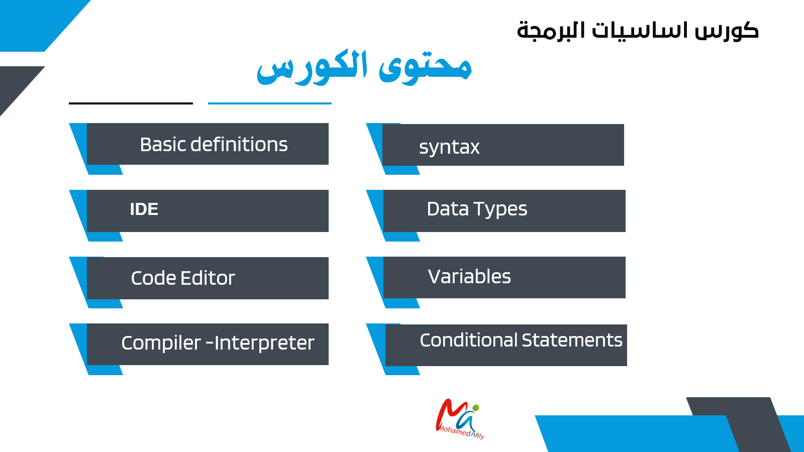
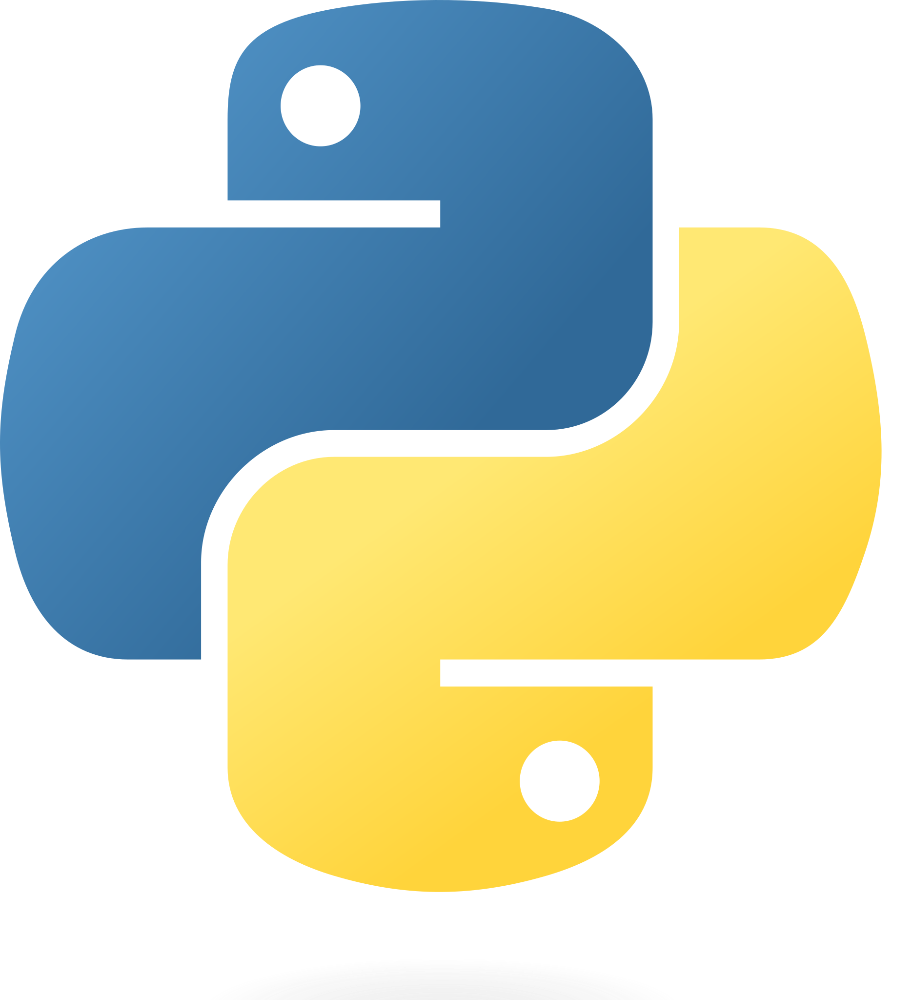
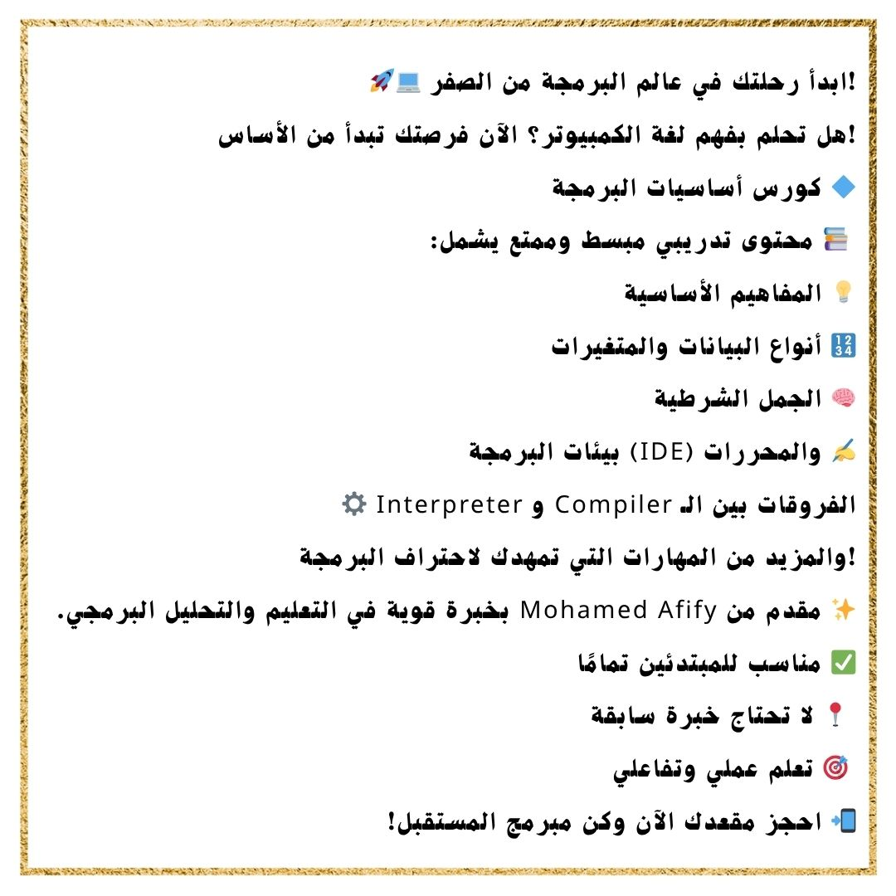

رحلتك في عالم البرمجة
تعلّم التفكير المنطقي، واكتشف أساسيات كتابة البرامج، ثم طبّق ما تتعلمه في أنشطة ومشروعات تناسب مستواك.
اختر المسار المناسب لك
ابدأ من المسار الأقرب إلى هدفك، ثم انتقل إلى المستوى التالي عندما تكون مستعدًا.

البرمجة للأطفال
ابدأ مع ScratchJr ثم انتقل تدريجيًا إلى Scratch من خلال أنشطة ومشروعات بسيطة.
اكتشف المسار ←
أساسيات البرمجة
تعرّف على المفاهيم الأساسية، والمتغيرات، وأنواع البيانات، والشروط، وبيئة كتابة الكود.
استكشف الموضوعات ←
تعلم Python
انتقل إلى مسار Python للتعرف على كتابة الأوامر وبناء البرامج خطوة بخطوة.
افتح مسار Python ←
ورش العمل والتطبيقات
طبّق ما تتعلمه من خلال أنشطة عملية ومشروعات صغيرة تساعدك على ترسيخ المفاهيم.
استكشف ورش العمل ←ماذا ستتعلم في أساسيات البرمجة؟
تعرّف على المفاهيم التي تساعدك على فهم طريقة بناء البرامج.
التعلّم بالتطبيق
لا تقتصر البرمجة على فهم المفاهيم؛ فالتدريب العملي يساعدك على تجربة الأفكار، واكتشاف الأخطاء، وتطوير الحلول تدريجيًا.
ابدأ التدريب ←التسجيل والاختبارات والملفات
كل الروابط الأساسية في مكان واحد لتسهيل الوصول إلى التدريب والتقييم.
اختبار أساسيات البرمجة
اختبر فهمك لأساسيات البرمجة، وأجب عن الأسئلة خلال الوقت المحدد. ستظهر نتيجتك وفق إعدادات الاختبار بعد إرسال الإجابات.
إذا لم يظهر الاختبار داخل الصفحة، اضغط هنا لفتح الاختبار مباشرة.